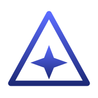
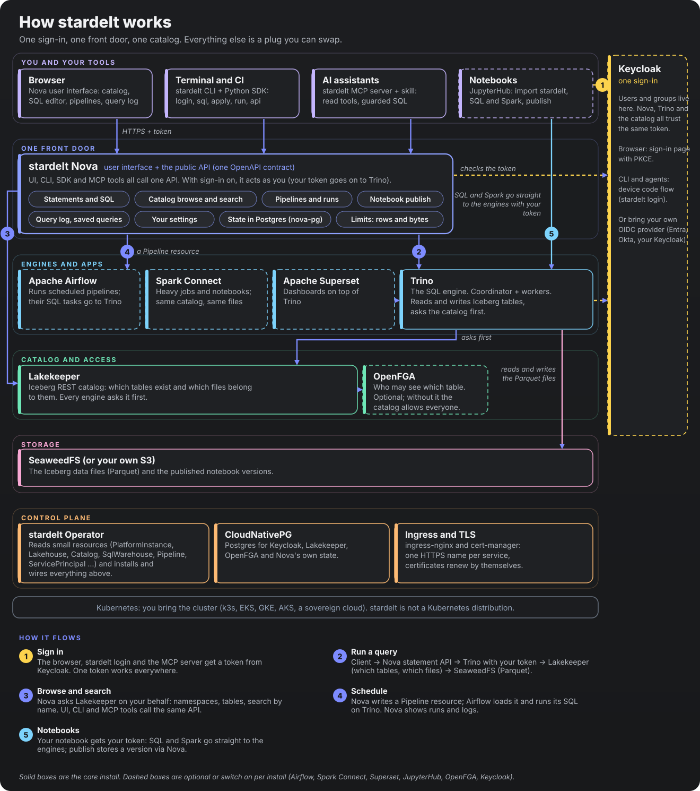
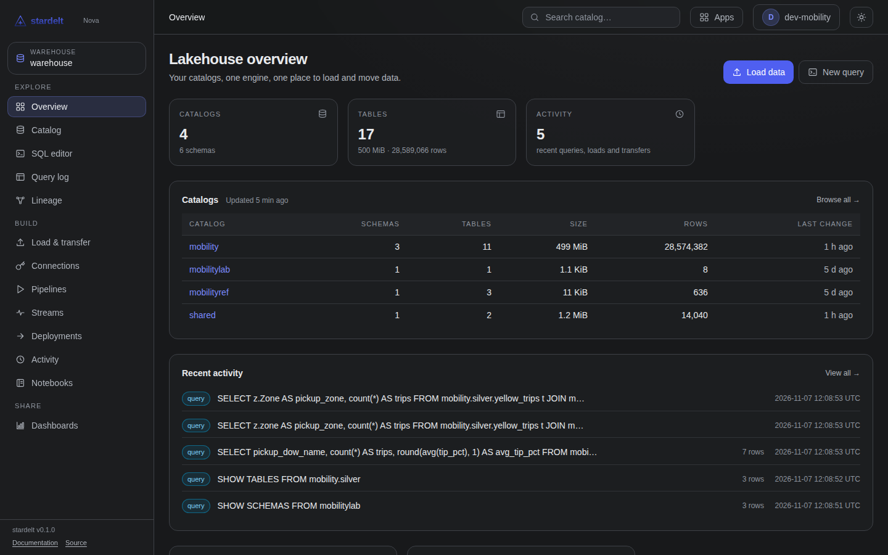

Your own data platform
One sign-in, one interface, one API — inside your own Kubernetes.
Open source · Apache 2.0 components · Kubernetes-native

the name
star + delta
★ star
The star schema: facts in the middle, their dimensions around them. The shape of analytics for thirty years.
Δ delta
Change. And the lakehouse: table formats such as Delta Lake and Apache Iceberg turned files on object storage into real tables. stardelt builds on Iceberg.
The mark says it too: a star inside a Δ.
why we build it
Your data is your company’s memory.
Don’t rent it. Own it.
Europe, independent
Europe can build its own.
450 million people. 27 countries. Our data should answer to our laws, our values and our choices.
Data platforms are rented, not owned
Rented
A managed control plane, a per-seat bill, a region you do not choose.
Fragmented
One vendor for the catalog, another for SQL, a third for pipelines, a fourth for BI.
Locked in
Your tables live in a format only the vendor reads well.
Opaque
You cannot see the query, the grant or the job without asking support.
What stardelt is
One sign-in
Your identity provider, your groups, your policies. Keycloak included, or bring your own OIDC.
One interface
Catalog, SQL, pipelines, notebooks, streams and dashboards in one place — stardelt Nova.
One API
Every screen is a documented API call. Kubernetes resources describe the platform itself.
The whole platform in one picture

Read it from the top: people and tools, Nova, engines, catalog, storage, control plane.
One sign-in
The OIDC provider you already run holds users and groups; small installs can start with the bundled Keycloak.
One API
Whatever you can click, you can call.
Nova acts as you
With sign-in on, your token goes on to the engines, so what you may read is decided by the engine and the catalog for you, not by Nova's own power.
Plugs, not a monolith
The engine, the catalog, the identity provider and the object store are replaceable behind open contracts (SQL, the Iceberg REST catalog, OIDC, S3).
Known limits
Results Nova keeps in memory are capped (100 000 rows or about 64 MiB per statement); storage credentials are one platform key today, not yet one short-lived key per person.
One interface
- Catalog explorer over every catalog you may see
- SQL editor with results, history and lineage
- Pipelines, notebooks and streams in the same place
- Dashboards from Superset, embedded with the same sign-in
- A platform health view that reports what is actually running

Find the data
- Catalogs, schemas, tables and views in one tree
- Columns, partitions, snapshots and table history
- Descriptions, tags and owners next to the data
- Lineage from the table you are looking at

Streaming that is a resource, not a project
A StreamApp is a Kafka topic in and an Iceberg table out. The operator creates the application, the checkpoint on S3 and the status a reader can trust.
apiVersion: stardelt.io/v1alpha1
kind: StreamApp
metadata: { name: pegelonline }
spec:
source: { topic: pegelonline.measurements }
sink:
catalog: mobility
table: bronze.pegelonline_continuous
mode: merge
mergeKeys: [station_uuid, timeseries, measured_at]
ownerGroup: mobility-analyticsThe platform is a resource, too
PlatformInstance describes an installation: the domain, the identity mode, the pillars that are on. Catalog and SqlWarehouse describe data domains and compute; Connection and ServicePrincipal describe how jobs reach the outside world.
apiVersion: stardelt.io/v1alpha1
kind: PlatformInstance
metadata: { name: alpha }
spec:
baseDomain: alpha.example.com
identity:
mode: platform # or external: your IdP
adminGroup: platform-admins
pillars:
batch: true
notebooks: true
dashboards: true
streaming: trueWhere each task is done
| Where | What it is for |
|---|---|
| Nova | finding and exploring data, writing SQL and notebooks, running, stopping and retrying, watching what happened |
| API, command line, agents | everything Nova does, and automation |
| Kubernetes resources | lasting settings an administrator or your GitOps tool owns: PlatformInstance, Lakehouse, Catalog, Connection, ServicePrincipal, Pipeline, StreamApp |
| Git | the only way a team's work moves from dev to prod: pipelines, notebooks, SQL, stream apps |
Build once, deploy many

Build once, deploy many: a stage never copies objects to another stage; Git carries them.
Open and sovereign
Permissive licences.
Apache 2.0 and MIT: Trino, Iceberg, Airflow, Superset, JupyterHub, Keycloak, CloudNativePG, Strimzi and the stardelt components. Every exception is named at stardelt.io/docs/architecture/licenses.
Yours at every layer.
Your Kubernetes, your object store, your identity provider, your network. No license server, no phone-home at runtime.
Today
0.0.x, alpha
Each release is proven on a fresh node before it is published. Built in the open, and changing quickly.
Working today
Catalog, SQL, Iceberg tables, pipelines, notebooks, service principals, streams, dashboards, backups.
Next
Docs for each release, the operator as the one install path, more ingestion. The roadmap is on the site.
open, in public
Let’s build it together.
Bring your team, your questions and your ideas. Every decision is made in the open, and everything is yours to keep.
Start it on your own cluster
Docs — stardelt.io/docs
Quickstart — stardelt.io/docs/getting-started/quickstart
Source — github.com/stardelt
stardelt · your own data platform